J.Kim, T.L., W.Unger, arXiv:2305.18179, arXiv:2311.07209, arXiv:2412.11677
Introduce auxiliary integer variables
Integrate out gauge fields first
Then integrate over Grassmann fields
\[ Z=\int d\bar\chi d\chi dU e^{-S_f[\bar\chi,\chi,U]}=\sum_{\{k,n,\ell\}} \underbrace{\prod_{b=(x,\hat{\mu})}\frac{(N_c-k_b)!}{N_c!k_b!}\gamma^{2k_b\delta_{\hat{0},\hat{\mu}}}}_{\text{meson hoppings}} \underbrace{\prod_{x}\frac{N_c!}{n_x!}(2am_q)^{n_x}}_{\text{chiral condensate}} \underbrace{\prod_{\ell}w(\ell,\mu)}_{\text{baryon hoppings}} \]
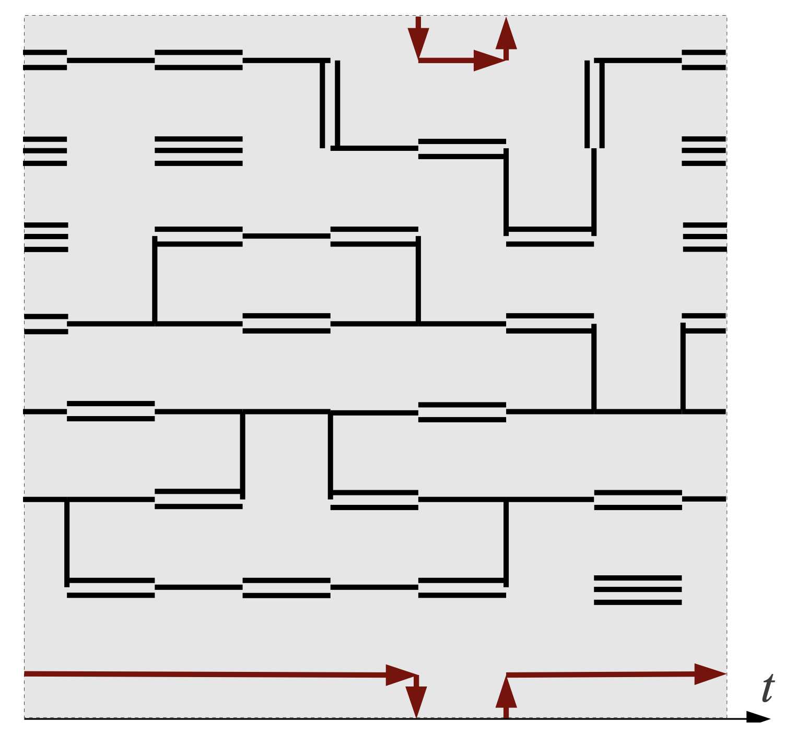
Phase diagram1
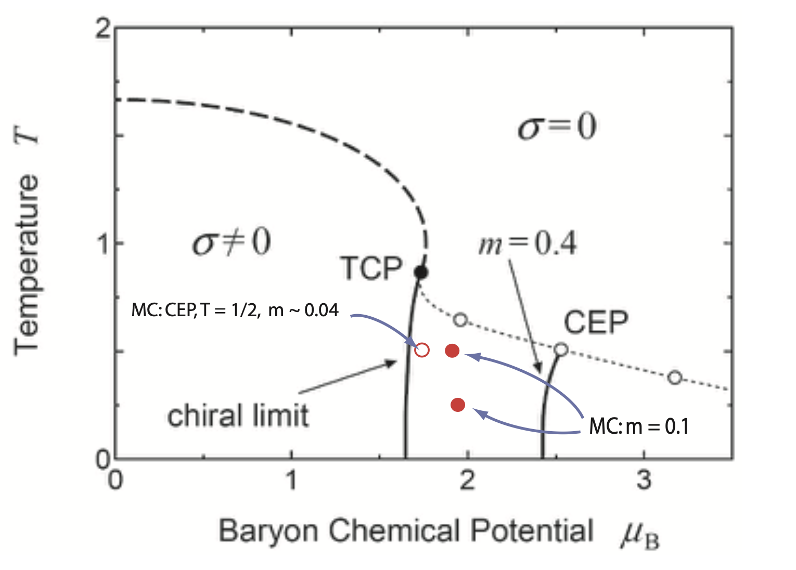
Expected to exhibit chiral phase transition
Sign-problem with dual variables is milder
Past investigations have included
Understanding exact nature and location of phase transition requires low-\(T\) simulations
Goal
Simulate SC-LQCD on a Quantum Annealer where temperature plays no role
\[ H_{Ising}=\sum_{i<j}K_{ij}\sigma_i^z\sigma_j^z-\sum_i h_i\sigma_i^z\quad;\quad\sigma_i^z=\begin{pmatrix}1&0\\0&-1\end{pmatrix} \]
What is the absolute ground state of this system?
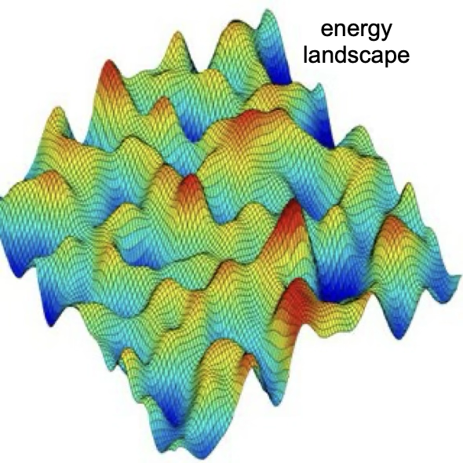
Warning
Determining the absolute dground state is a non-deterministic polynomially (NP) hard problem
Initialize system at some temperature \(kT> E_{max}\)
Slowly reduce the temperature 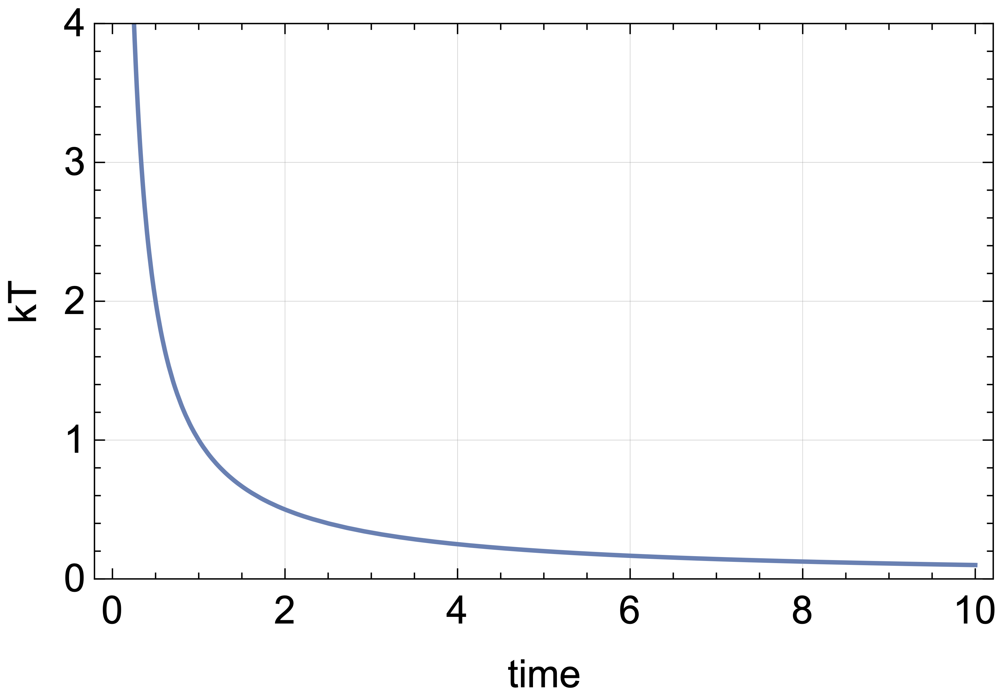
Escaping local minima via thermal fluctuations
System settles to lowest energy configuration (hopefully)
Has physical interpretation
Monte-Carlo via Metropolis-Hastings
Introduce a non-commuting term to “target” Hamiltonian:
\[ H(s)=-A(s) \sum_{i}\sigma_i^x+B(s) H_{Ising}\quad;\quad\sigma_i^x=\begin{pmatrix}0&1\\1&0\end{pmatrix} \] \[ [\sigma^x,\sigma^z]\ne 0 \]
Keep temperature fixed, but vary \(A(s)\) and \(B(s)\)
System evolves from the ground state of transverse field to ground state of target Hamiltonian
Quantum fluctuations
Transverse field introduces quantum fluctuations that enables “tunnelling” between barriers, ensuring (hopefully) that the ground state of the instantaneous Hamiltonian \(H(s)\) is reachable during evolution of \(s\)
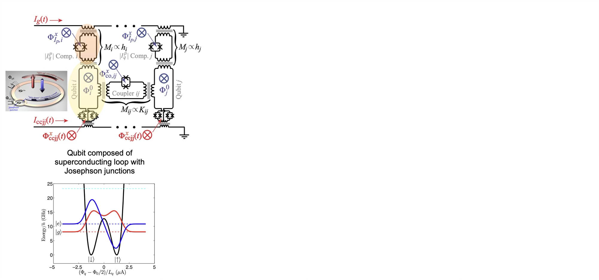
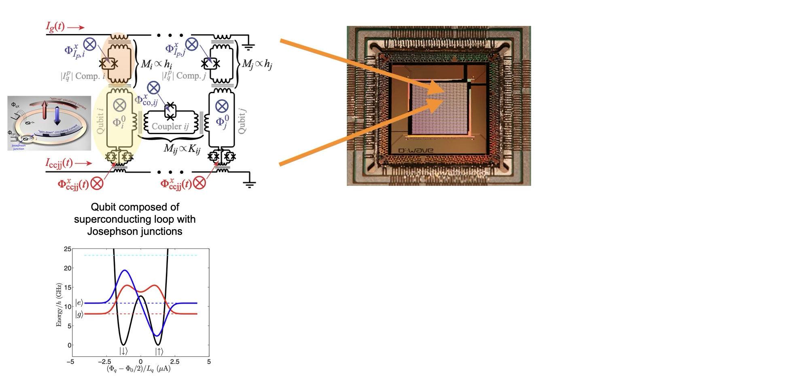
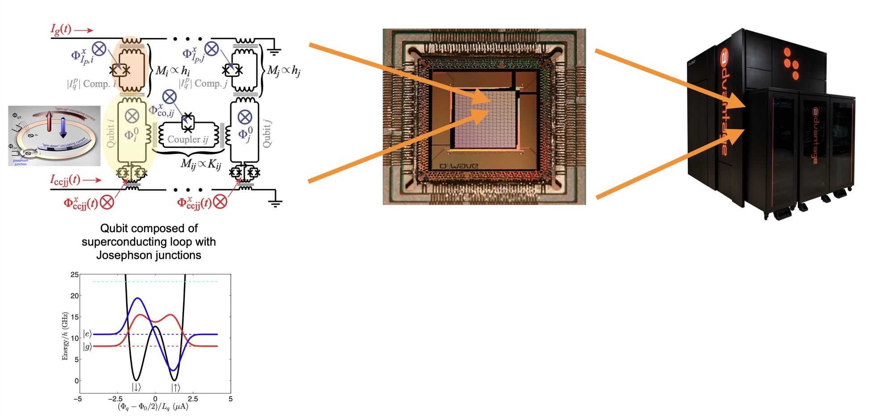
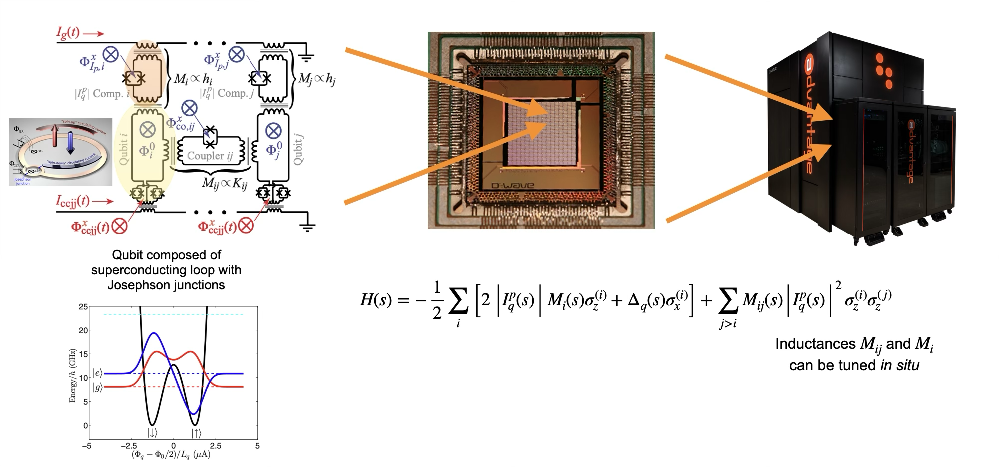
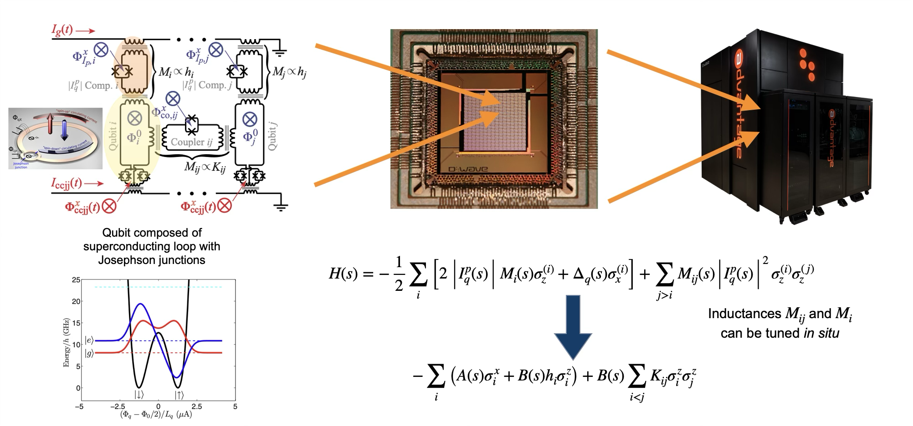
Typical anneal times \(\sim\mathcal{O}(100\ \mu s)\)
Each run consists of \(\sim \mathcal{O}(500-1000)\) anneals
Requires total of \(\sim\mathcal{O}(500\ ms-1\ s)\) per run
When submitting run, get access to entire ‘machine’ (= QPU)
After each run, perform post-processing of data
Total allocation per year: \(\sim\mathcal{O}(\text{hrs})\)
Simulated (thermal) annealing
\[ \mathcal{O}\left(e^{aN^c}\right) \]
Simulated quantum annealing
\[ \mathcal{O}\left(e^{aN^c}\right) \]
Physical quantum annealing
\[ \mathcal{O}\left(e^{aN^c}\right) \]
It’s still an NP-Complete problem
D-Wave hopefully has much smaller coefficients \(a\) and \(c\)
Some examples showing potential scaling advantage
Naturally D-Wave can be used to investigate Ising spin glass systems
But we can do more! Assume you want to “optimize” a specific problem with “objective” function \(f(\alpha,\vec{x})\)
What types of problems can be done this way?
Combinatorial Optimization (CO) problem
\[ \begin{aligned} \text{find extremum of } & c^T\cdot x\\ \text{subject to } & A\cdot x\le b\\ & x \ge 0\\ \text{and } & x\in \mathbb{Z}^n \end{aligned} \]
where \(c\) and \(b\) are vectors of coefficients and \(A\) is a matrix of coefficients
Example
\[ \begin{aligned} \text{find } & \min y=3x_1+2x_2+x_3+x_4+3x_5+2x_6\\ \text{subject to } & x_1+x_3+x+6=1\\ & x_2+x_3+x_5+x_6=1\\ & x_3+x_4+x_5=1\\ & x_1+x_2+x_4+x_6=1\\ \text{and } & x_i=0\text{ or }1 \end{aligned} \]
Warning
Solving CO is a non-deterministic polynomially (NP) hard problem!
ILP is not suitable for D-Wave
Need to cast problem w/ constraints into quadratic form \(x^T Q x\) w/o constraints
Include constraints via “penalty” factors in the optimization
\[ \begin{aligned} \min y=&3x_1+2x_2+x_3+x_4+3x_5+2x_6\\ &+p_1(x_1+x_3+x_6-1)^2+p_2(x_2+x_3+x_5+x_6-1)^2\\ &+p_3(x_3+x_4+x_5-1)^2+p_4(x_1+x_2+x_4+x_6-1)^2 \end{aligned} \]
Penalty parameters \(p_i\ge 0\) are free parameters, similar to Lagrange parameters
Set \(p_i=p=10\) and use \(x_i^2=x_i\)
\[ \min y=\min x^T Q x+40\quad;\quad Q=\begin{pmatrix} -17 & 10 & 10 & 10 & 0 & 20 \\ 10 & -18 & 10 & 10 & 10 & 20 \\ 10 & 10 & -29 & 10 & 20 & 20 \\ 10 & 10 & 10 & -19 & 10 & 10 \\ 0 & 10 & 20 & 10 & -17 & 10 \\ 20 & 20 & 20 & 10 & 10 & -28 \end{pmatrix} \quad;\quad x_{sol}= \begin{pmatrix} 1 \\ 0 \\ 0 \\ 0 \\ 1 \\ 0 \end{pmatrix} \]
\(Q\) can be symmetric or upper (lower) triagular
Previous problem required binary variables with \(x_i^2=x_i\)
We can relate to our Ising problem that uses \(s_i^2=1\) via \(x_i=(s_i+1)/2\)
\[ x^T Q x = s^T K s+h^T s+C \quad;\quad K=\frac{1}{4}Q \quad;\quad h^T_i = \frac{1}{2}\sum_jQ_{ji} \quad;\quad C=\frac{1}{4}\sum_{ij}Q_{ij} \]
Given QUBO \(Q\), or Ising \(K\), \(h\), the D-Wave API makes an embedding (determines connections of physical qubits to make logical qubits) to model the problem and subsequently performs QA
global minimum of QUBO cost function \(=\) global minimum of CO cost function
Warning
Mapping a general CO problem into QUBO form is non-trivial, and the mapping is not unique.
Strong coupling limit: \(\beta=\frac{2 N_c}{g^2}\to 0\implies S=S_g+S_f\to S_f\)
Gauge links and fermion fields can be integrated formally
\[ Z=\int d\bar\chi d\chi dU e^{-S_f[\bar\chi,\chi,U]}=\sum_{\{k,n,\ell\}} \underbrace{\prod_{b=(x,\hat{\mu})}\frac{(N_c-k_b)!}{N_c!k_b!}\gamma^{2k_b\delta_{\hat{0},\hat{\mu}}}}_{\text{meson hoppings}} \underbrace{\prod_{x}\frac{N_c!}{n_x!}(2am_q)^{n_x}}_{\text{chiral condensate}} \underbrace{\prod_{\ell}w(\ell,\mu)}_{\text{baryon hoppings}} \]
“Grassmann constraint”
\[ n_x + \sum_{\mu=\pm 0,\cdots,\pm d}\bigg( k_{\mu}(x)+\frac{N_c}{2}|\ell_{\mu}(x)|\bigg) = N_c \]
Parameters of this “dual” theory take discrete (integer) values!
\(U(1) \implies\) no baryons
\[ Z=\int d\bar\chi d\chi dU e^{-S[\bar\chi,\chi,U]}=\sum_{\{k_b,n_x\}}e^{-\mathcal{S[k_b,n_x]}} \] \[ \mathcal{S[k_b,n_x]} =\sum_{b=(x,\hat{\mu})} D(k_b) + \sum_{x} M(n_x) \]
\[ \begin{aligned} \text{dimer }\ \ \ & D(k_b)=-\log\left(\frac{(N_c-k_b)!}{N_c!k_b!}\right) - 2k_b\delta_{\hat{0},\hat{\mu}} \log(\gamma)\\ \text{monomer } & M(n_x)=-\log\left(\frac{N_c!}{n_x!}\right) - n_x \log(2am_q)+c \end{aligned} \]
Grassmann constraint \[ n_x + \sum_{\mu=\pm 0,\cdots,\pm d} k_{\mu}(x) = N_c \]
Discrete variables \[ k_b\in\{0,1\}\quad n_x\in\{0,1\} \]
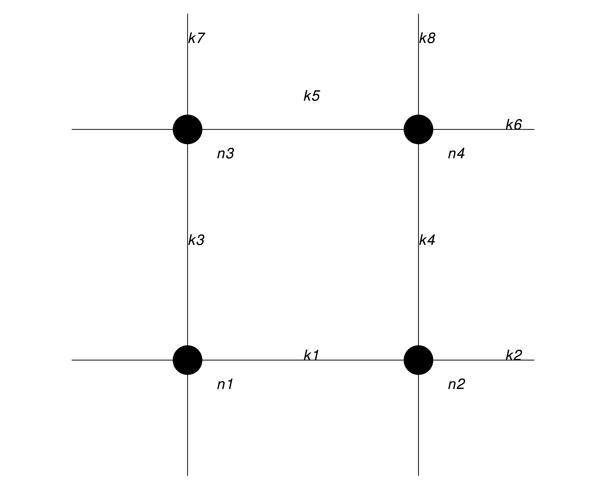
\[ \implies Q= \begin{pmatrix} -2 & 2 & 1 & 1 & 0 & 0 & 1 & 1 & 1 & 1 & 0 & 0 \\ 2 & -2 & 1 & 1 & 0 & 0 & 1 & 1 & 1 & 1 & 0 & 0 \\ 1 & 1 & -2 & 0 & 1 & 1 & 2 & 0 & 1 & 0 & 1 & 0 \\ 1 & 1 & 0 & -2 & 1 & 1 & 0 & 2 & 0 & 1 & 0 & 1 \\ 0 & 0 & 1 & 1 & -2 & 2 & 1 & 1 & 0 & 0 & 1 & 1 \\ 0 & 0 & 1 & 1 & 2 & -2 & 1 & 1 & 0 & 0 & 1 & 1 \\ 1 & 1 & 2 & 0 & 1 & 1 & -2 & 0 & 1 & 0 & 1 & 0 \\ 1 & 1 & 0 & 2 & 1 & 1 & 0 & -2 & 0 & 1 & 0 & 1 \\ 1 & 1 & 1 & 0 & 0 & 0 & 1 & 0 & -1 & 0 & 0 & 0 \\ 1 & 1 & 0 & 1 & 0 & 0 & 0 & 1 & 0 & -1 & 0 & 0 \\ 0 & 0 & 1 & 0 & 1 & 1 & 1 & 0 & 0 & 0 & -1 & 0 \\ 0 & 0 & 0 & 1 & 1 & 1 & 0 & 1 & 0 & 0 & 0 & -1 \end{pmatrix} \]
\[ \gamma=1\quad;\quad 2am_q=1 \]
Ferrenberg & Swendsen, Phys.Rev.Lett. 61 (1988) 2635-2638
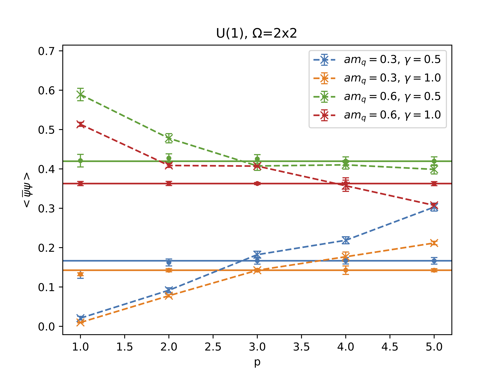
\[ \langle \bar\psi \psi\rangle=\frac{1}{V}\langle M\rangle\quad;\quad M=\sum_{x\in V}n_x \]
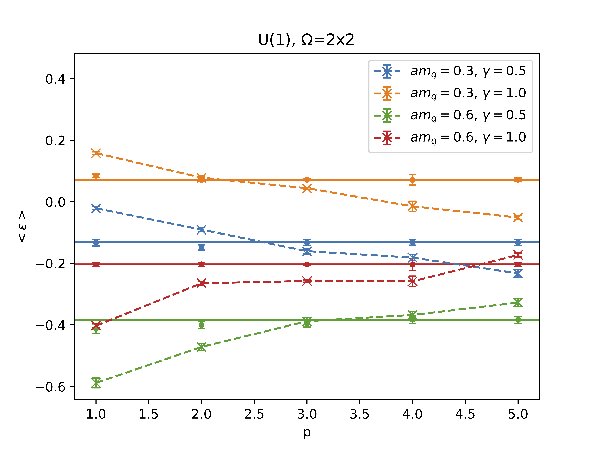
\[ \langle\epsilon\rangle=\frac{1}{V}\left(\langle D_t\rangle - \langle M\rangle\right)\quad;\quad D_t=\sum_{x\in V}k_{x,\mu=t} \]
dashed line: raw D-Wave data \(\quad\quad\quad\) solid line: reweighted D-Wave data
\[ \gamma=.1 \]
\[ am_q=.3 \]
\[ \langle \bar \psi\psi\rangle=\frac{1}{2am_q V}\left\langle\sum_{x\in V}n_x\right\rangle \]
\[ \langle B\rangle=\frac{1}{N_s}\left\langle \sum_l w_l\right\rangle \]
I am thinking a ML method that can restore the invalid solutions to valid solution.
We can extent the method to large sublattice (3x3, 2x2x2,4x4,…)
\(\mathcal{O}(\beta^n)\) gauge corrections. Now \(\mathcal{O}(\beta^2)\) is too expensive to simulate using worm algorithm
Simulated Quantum Annealing is more efficient then Simulate (Thermal) Annealing (in some cases)
Physically performing Quantum Annealing could be even more efficient (D-Wave)
Annealing works on systems with discrete degrees of freedom
Recast into QUBO form
Applied to Strong-coupling limit of QCD